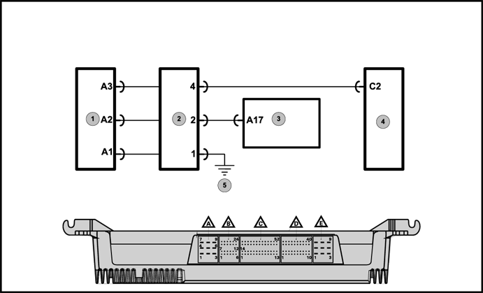
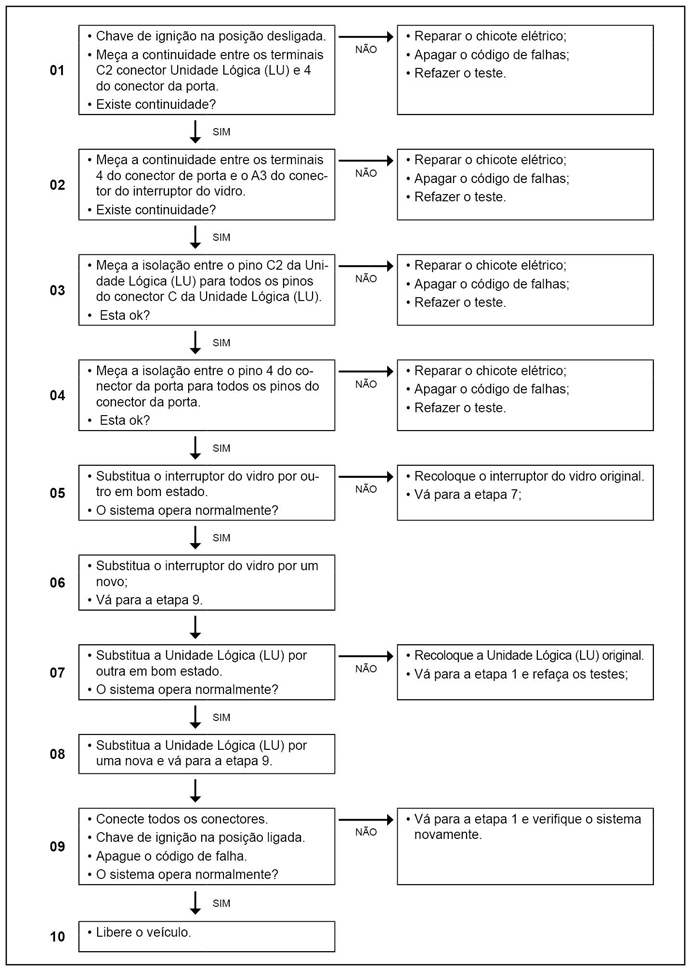

| Descrição da falha
|
Interruptor controle do levantamento vidro do passageiro da janela lado direito. Estado ativo por mais de 30 segundos. |
 
Legenda
- Interruptor do vidro janela direita
- Conector da porta lado direito
- Conector Cluster X1
- Unidade Lógica (LU)
- Ponto de massa localizado na coluna A do lado direito
Causa
Interruptor controle do levantamento vidro do passageiro da janela lado direito. Estado ativo por mais de 30 segundos.
Efeito
Vidro elétrico não funcionará até que a chave de ignição seja desligada e ligada novamente.
Dicas para a Oficina
– Verificar o chicote da porta, fiação em curto ou com emendas;
– Verificar conectores quanto a pinos torto ou oxidados;
– Verificar pontos de aterramento quanto à oxidação ou mau contato;
– Verificar interruptor de controle levantamento vidro porta do passageiro com defeito conforme tabela abaixo.
Valores de resistência do interruptor:
| Posição
| Valor da resistência
|
Desativada |
Circuito aberto > 2K ohm |
Aberta |
120-250 ohm |
Fechada |
800-1900k ohm |
Curto com o massa |
0-100 ohm |
Pinos 1 e 3 do interruptor do vidro lado do passageiro.
Passos do Diagnóstico de Falhas
  Atenção! Atenção!
Leia sempre as Recomendações para Diagnósticos.

|